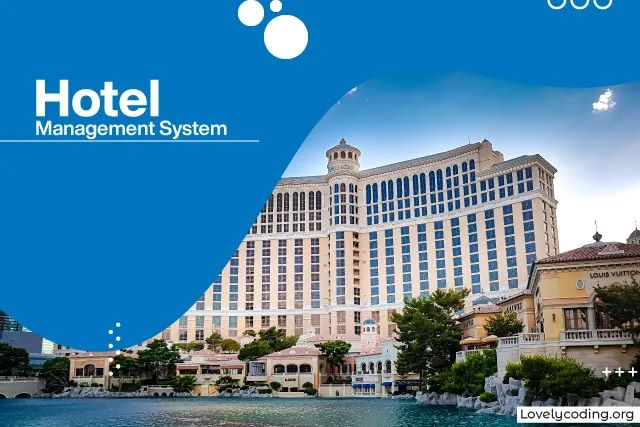
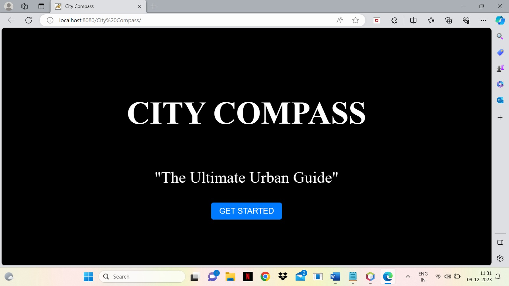
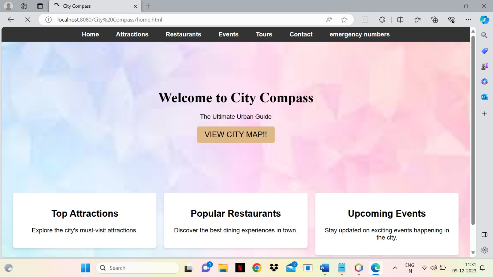
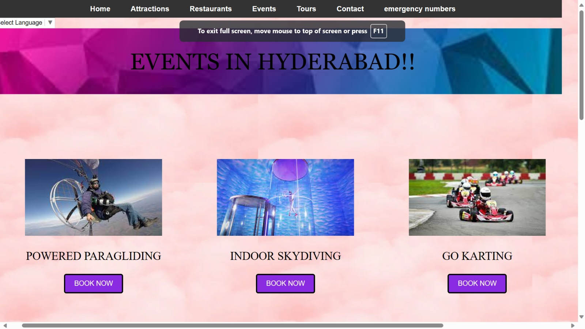
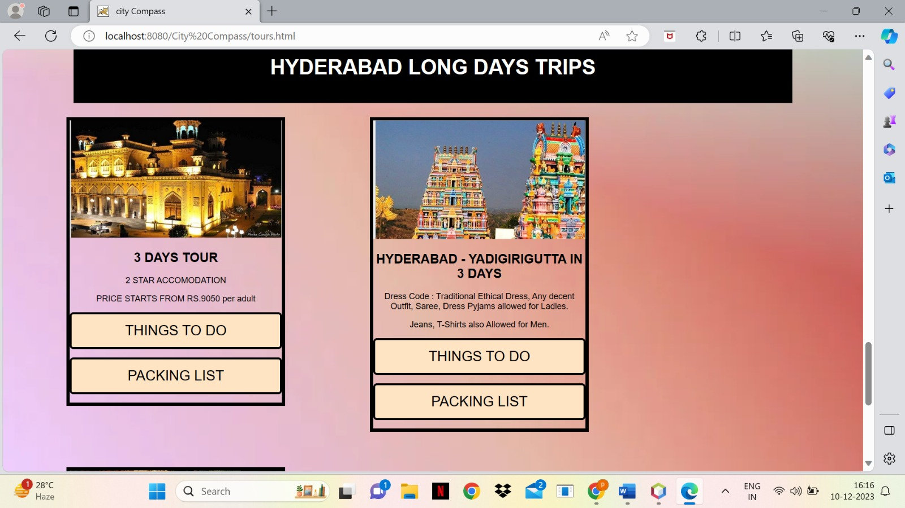

It is an online system that manages day to day operations in a hotel which includes organising tasks,managing,booking,reservation,account management and much more.
City Compass-The Ultimate Urban Guide, web application stands as an innovative solution, redefining the urban experience for residents and visitors alike. With a commitment to enhancing accessibility and enjoyment, the platform offers real-time information, personalized recommendations, and interactive features to navigate and explore cities efficiently. Multilingual support ensures inclusivity, catering to both locals and tourists. The application encompasses diverse features, including language selection, a detailed showcase of attractions, insights into city events, and an extensive collection of restaurants with integrated Google functionality. The inclusion of tours, complete with information on activities and packing lists, adds experiential depth. The contact feature enables users to contribute their details, fostering community engagement by storing the data securely. Notably, the project prioritizes safety with an emergency numbers feature, offering essential contacts. Developed using MySQL for robust database connectivity and the NetBeans IDE 18 with JDK and JSP Servlets, this project signifies a comprehensive approach to transforming urban engagement into a sustainable, accessible, and enjoyable endeavor.
   